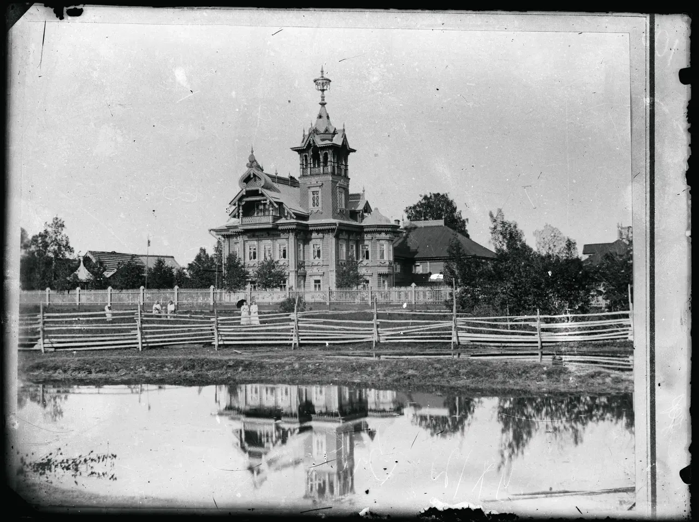
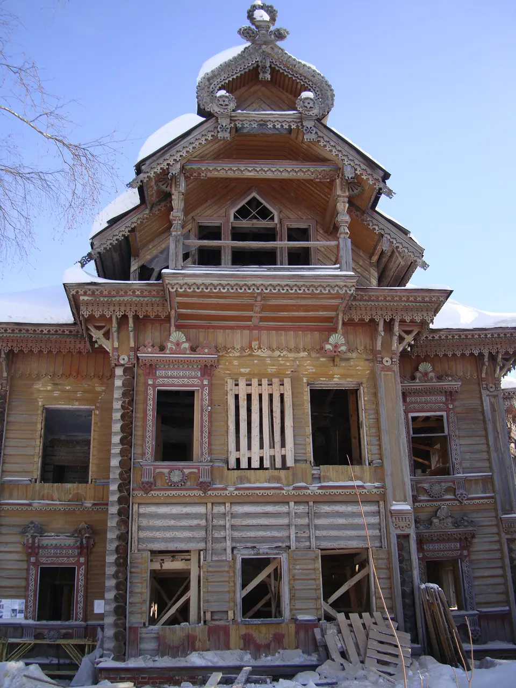
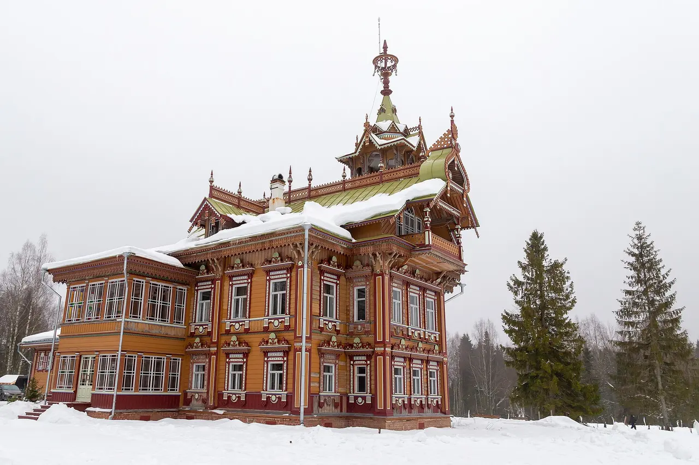
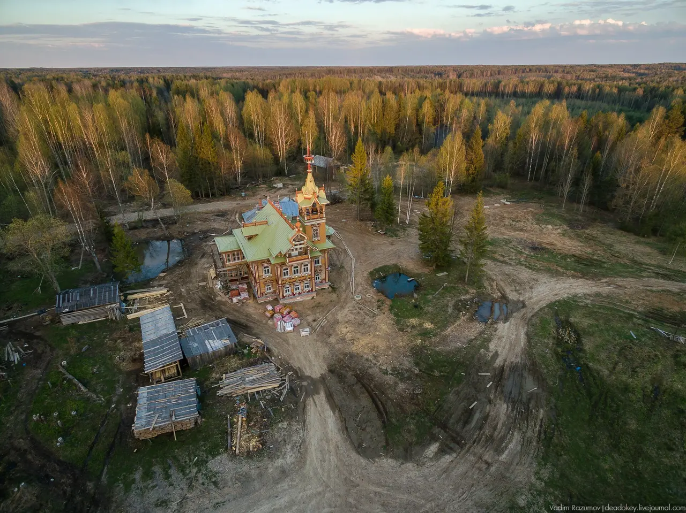
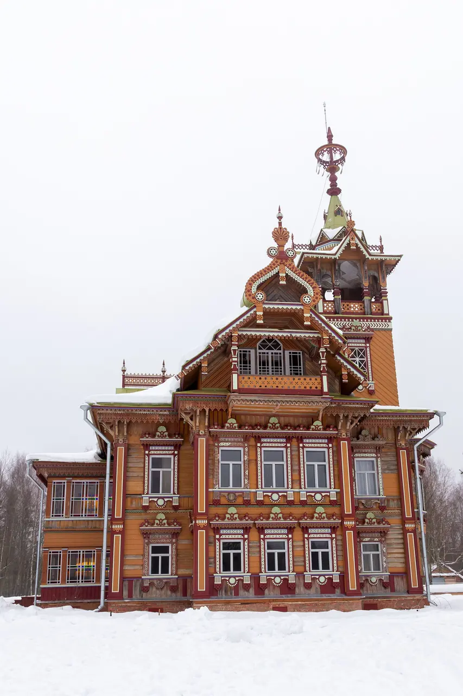
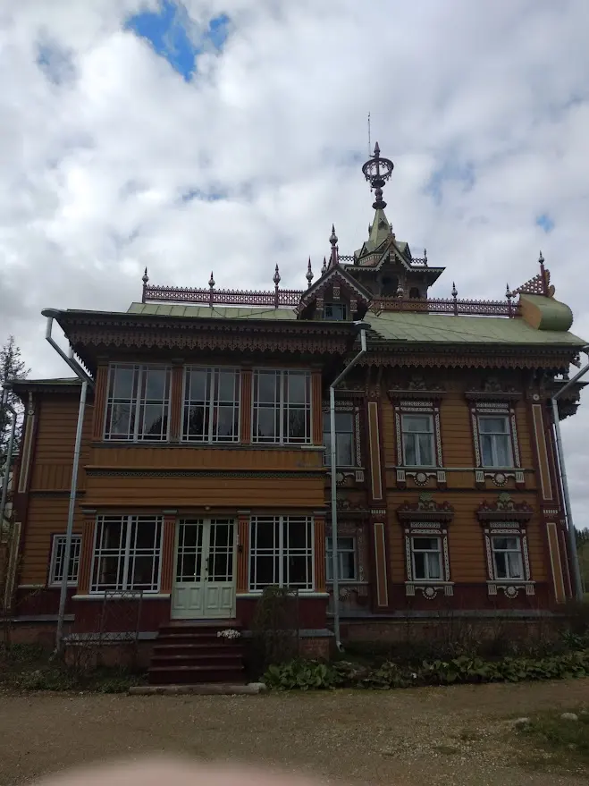
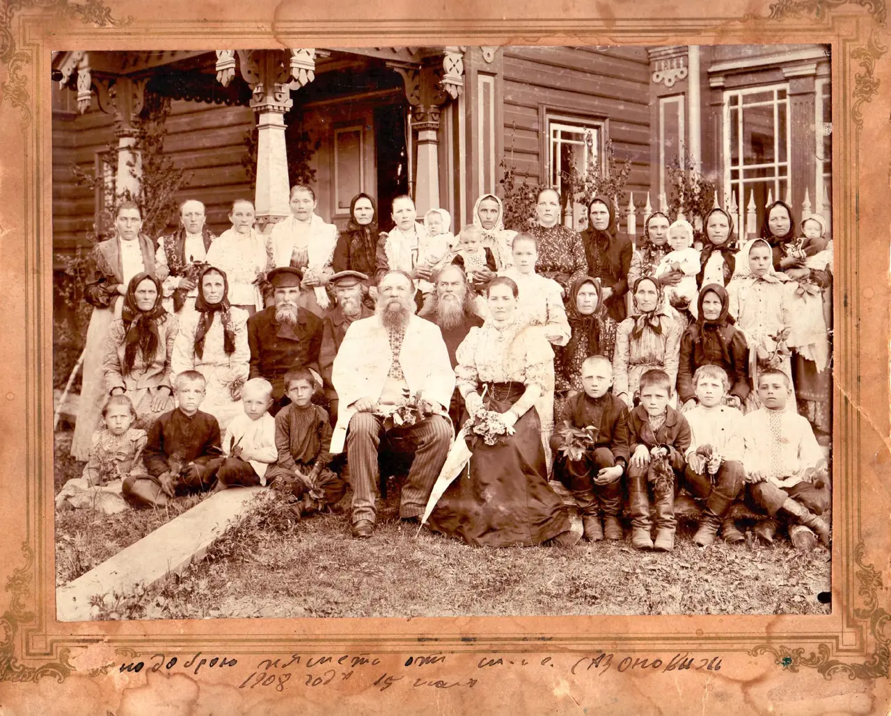

Ищи причину
Она отвечает за сухость стены раньше, чем резьба — за красоту.

Терем после реставрации, 2018. Фото: Olga Shuklina, CC BY-SA 4.0. Это отреставрированный дом с сохранёнными, заменёнными и воссозданными элементами.
Не с утраченного наличника. Пройди четыре решения реставратора и увидь, где заканчивается спасение старого дома и начинается новодел.
Три документальных состояния ставят вопрос. Ракурсы различаются, поэтому это последовательность свидетельств, а не шторка «до/после».



Вода разрушает деревянный дом сверху и изнутри. Поэтому реставратор сначала устраняет причину, а не рисует красивое «после».
Русский синтезированный голос: Дмитрий. Полный текст доступен ниже и в отдельной расшифровке.
С какого повреждения деревянный дом начинает умирать? Не с потери резного наличника. Вода входит через кровлю, добирается до брёвен и превращает красивый силуэт в аварийный сруб. В Асташове дом сначала защитили от воды. Потом разобрали и пронумеровали. Пригодное сохранили и вернули на место, а утраты восполнили только там, где оставалось доказательство. Теперь попробуй сам выбрать правильный порядок спасения.
Четыре остановки ведут взгляд от места к детали. Это не пересказ интерактива.
Поднимай взгляд постепенно: окружение объясняет силуэт, кровля — выживание, сруб — материальную правду, резьба — доказуемое восполнение.
1 · Лес. Терем стоит среди плотного леса. Высокая башня делает дом видимым в большом ландшафте.
2 · Кровля. Пока крыши отводят воду, стены могут жить. Раскрытая кровля запускает скрытое разрушение древесины.
3 · Сруб. Его полностью разобрали и пронумеровали. Пригодные элементы вернули, повреждённые протезировали или заменили.
4 · Резьба. Часть утраченного восстановили по фрагментам и изображениям. Это доказуемая реконструкция, но не уцелевшая материя XIX века.
Вывод. Реставрация начинается не с красоты: сначала причина разрушения, затем сохранение живого материала, потом возвращение доказуемого образа.
1 минута 41 секунда
Русский синтезированный голос: Дмитрий. Расшифровка полностью дублирует звук.


Деталь показывает работу мастера; здание — связь частей; усадьба — человеческий масштаб; лес — причину сильного силуэта.

Один вопрос на экране. Каждый выбор меняет состояние дома и объясняет риск; ошибка не отнимает попытку.
Вода продолжает входить через повреждённую кровлю.
Выбери действие и сразу проверь последствие.
Причина остановлена, детали получили номера, пригодная древесина вернулась на место, а утраты восполнены только по доказательствам.
Она отвечает за сухость стены раньше, чем резьба — за красоту.
Старое бревно, протез и замена могут работать в одной стене.
Воссозданная часть честна, когда её форма подтверждена следом или изображением.
Сруб перебрали целиком, но после реставрации в нём осталось около 50–60% оригинальных деревянных деталей. Сохранение — это не запрет на разборку, а контроль судьбы каждого элемента.
Мартьян Сазонов был крестьянином-отходником — уезжал на заработки и вернулся с деньгами на большой дом. Терем стал не безымянной «русской сказкой», а личным высказыванием о заработанном успехе.

Точная дата завершения дома неизвестна; 1897 год используется как принятая датировка, а не как точный день. Отдельные детали восходят к опубликованному в 1877 году эскизу, связанному с кругом Ивана Ропета.
Граница атрибуции: доказательств личного участия Ропета нет. Формула страницы — «по мотивам опубликованного эскиза», а не «дом архитектора Ропета».
Историческая фотография семьи, автор не установлен; общественное достояние.Без согласованного интервью мы не сочиняем прямую речь. Официальный рассказ владельцев и карточка АРХИWOOD дают последовательность, имена и технологии.
Вернули заброшенному дому работающую функцию музея-гостиницы.
Имена связаны с проектом в официальной истории и карточке премии.
Разборка, нумерация, старые и новые брёвна, источниковое восстановление.
Не точный день завершения.
Учреждения, затем забвение.
Разборка, отбор, сборка и реконструкция.
Признание проекта профессиональным сообществом.
Факт: сруб полностью перебирали; сохранилось около 50–60% оригинальных деревянных деталей. Атрибуция: детали связаны с опубликованным эскизом круга Ропета, но личное авторство не доказано. Музейное прочтение: различия старого и нового — не дефект вида, а главное свидетельство метода.
Критический вопрос — судьба каждого бревна и доказательство для каждой утраченной части.
Здесь важны не только материалы отдельных домов, но и группы построек, дороги, каналы, лес и совместная практика ремонта кровель.
Карточка UNESCO →Сходство деревянного материала не доказывает заимствование. Сравнивается принцип сохранения: отдельный спасённый объект и живая историческая среда.
Музейная экспозиция и актуальные условия посещения →
Ссылка проверена 28 августа 2026 года; перед поездкой условия нужно сверить на официальном сайте.
Определи материальный статус четырёх решений. Каждый неверный ответ объясняет различие.
Выбери статус.
Выбери статус.
Выбери статус.
Выбери статус.
Теперь слово «реставрация» не скрывает, что произошло с конкретной частью дома.
Три первых выпуска открываются по одному принятому маршруту.
На месте начни с кровли, затем ищи различия в срубе и только после этого смотри на резьбу.
В Асташове старый материал входит в современную жизнь; в Коломенском утраченное здание читают по документам и современной реконструкции.